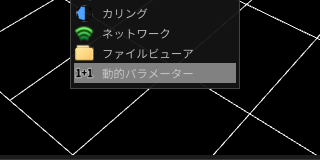
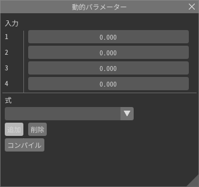
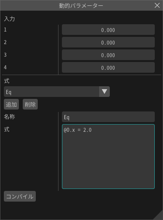
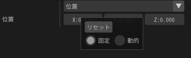
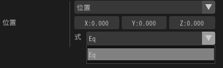
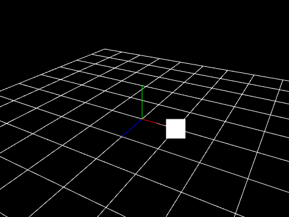

動的パラメーター¶
概要¶
動的パラメーターはランタイム（ゲーム中）のエフェクトのパラメーターをエフェクト再生中に書き換えるパラメーターを設定します。 簡単なプログラムでパラメーターを制御します。外部からパラメーターを与えることもできます。
使い方¶
基本¶
パネル¶
動的パラメーターのパネルを開きます。
式の追加¶
追加ボタンで式を追加できます。 そこでは、式の名前と式の内容を設定できます。
式の記述¶
例えば、1つ目のパラメーターを2.0に書き換える場合、下記のように記述します。
@O.x = 2.0
その後、コンパイルを押します。問題がなければ、OKと表示されます。問題があれば原因が表示されます。
式の適用¶
適用先のパラメーターを右クリックし、動的を選択します。 そうすると、式を選択する欄が表示されます。
そこで、先ほど入力した式を選択すると式が適用されます。
位置のパラメーターは0, 0, 0 ですが式でxを2にしているため、2の位置に表示されます。
式の機能¶
複数のパラメーターの変更¶
x, y, z, w, それぞれのパラメーターを変更できます。 下記のように入力すると、それぞれ、2, 3, 4, 5に値が変更されます。 適用先が色の場合、x, y, z, wはRGBAに対応します。
@O.x = 2.0
@O.y = 3.0
@O.z = 4.0
@O.w = 5.0
パラメーター¶
外部から入力されたパラメーターはパネルの数値の欄やランタイムから指定できます。
| パラメーター | 説明 |
|---|---|
| @P.x @P.y @P.z @P.w | 動的パラメーターを適用する前のパラメーター |
| @In0 @In1 @In2 @In3 | 外部から入力されたパラメーター |
| @GTime | 現在の時間(秒) |
| @PTime | 親パーティクルが生成されてからの時間(秒) |
関数¶
下記の関数が使用できます。
| 関数 | 説明 |
|---|---|
| sin(x) | Sineの結果を返します。xはラジアンです。 |
| cos(x) | Cosの結果を返します。xはラジアンです。 |
| rand() | ランダムな値を返します。 |
| rand(x) | xに応じたランダムな値を返します。xが同じ値であるなら、返す値は同じです。 |
| step(edge,x) | xがedgeより大きい場合は1を返し、そうでない場合は0を返します。 |
適用可能先¶
下記のパラメーターに対して適用できます。
生成数
生成時間
生成開始時間
生存時間
位置 - 固定、PVA、イージング
角度 - 固定、PVA、イージング
拡大 - 固定、PVA、イージング